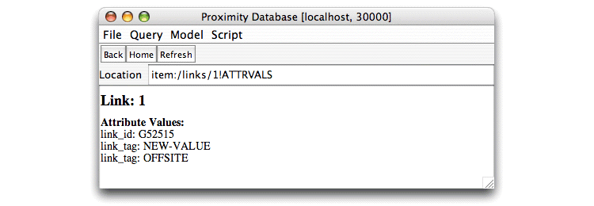

To ensure that any new data does not conflict with existing
data, Proximity’s import process restricts when and how you can
add additional elements to an existing database. In many instance,
however, careful data management can eliminate such conflicts. In
such cases, users can override the default import restrictions by
setting the noChecks import option to true.
When
noChecks is true, Proximity makes no checks to see if
the imported data conflicts with the existing database. If imported
objects or links already exist
in the database, Proximity creates duplicate entries for these items.
When noChecks is
false or not specified, adding new objects or links to a database that
already contains such items results in an error. You can also use the
noChecks option to import additional values for previously
defined attributes (an error without this option). The only check in
this case is ensuring that the “new” attribute is of the
same type as the previously defined attribute.
When noChecks is true, Proximity automatically
recodes container
identifiers when imported containers conflict with
containers already present in the database. For example, if the
database already has a container with an ID of 2, and the XML data
file to be imported also includes a container with an ID of 2, the
import process assigns a new, non-conflicting identifier to the imported
container. Any associated data (container attributes and nesting
relationships) are similarly recoded.
The following exercise adds a small number of new link_tag attribute values to the database. The new values are added solely for illustrative purposes; they are not used in later Tutorial exercises.
Exercise 3.3. Importing additional link_tag attribute values:
Before beginning, make sure that you are serving the ProxWebKB database (created in Exercise 3.1) using Mserver. You must have completed Exercise 3.1 before running the current exercise. Data files must be on the same machine as that serving the database.
Try to import the new link_tag
attribute values without using the noChecks option.
(Substitute the appropriate port number if you are using a
different port.)
> bin/import-xml.sh localhost:30000 \
$PROX_HOME/doc/user/tutorial/examples/more-linktag-values.xml
Proximity attempts to import the new attribute values, but reports an error because the link_tag attribute already exists.
ERROR app.ImportXMLApp: java.lang.IllegalArgumentException: Attribute already exists in the database: link_tag. You may use the noChecks flag if you want to ignore this check.
Import the additional link_tag attribute
values, specifying that noChecks is true.
> bin/import-xml.sh localhost:30000 \
$PROX_HOME/doc/user/tutorial/examples/more-linktag-values.xml true
When the import process is finished, Proximity reports on the number of database entities created (leading information showing elapsed time and execution thread has been omitted from the trace for brevity):
INFO app.ImportXMLApp: * importing database from /proximity/doc/user/tutorial/examples/more-linktag-values.xml NOT CHECKING FOR DUPLICATES INFO app.ImportXMLApp: * converting xml to bulk import text files; dir: /tmp/prox-xml-import62294 INFO app.ImportXMLApp: attributes INFO app.ImportXMLApp: attribute: link_tag, L, str INFO app.ImportTextApp: * importing database from /tmp/prox-xml-import62294 INFO app.ImportTextApp: Loading object table INFO app.ImportTextApp: Loading link table INFO app.ImportTextApp: Loading attributes INFO app.ImportTextApp: Loading attribute: av_0 INFO app.ImportTextApp: Loading containers INFO app.ImportTextApp: * done importing INFO app.ImportXMLApp: * done importing; counts: 0 objects, 0 links, 1 attributes, 5 attribute values, 0 containers, 0 subgraph items
Note that the start of the trace includes a warning that the import process is not checking for duplicates.
If you want, examine link 1 in the Proximity Database Browser to see its attribute values. (A summary of steps for examining link 1’s attribute values is included, below. See Chapter 4, Exploring Data for complete information on using the Proximity Database Browser.)
From the Proximity Database Browser start page, click Links.
Click 1.
Click attrs.
|  |
Because link 1 already had a value of
“OFFSITE” for the
link_tag attribute, the new data is added
as an additional value for this attribute.